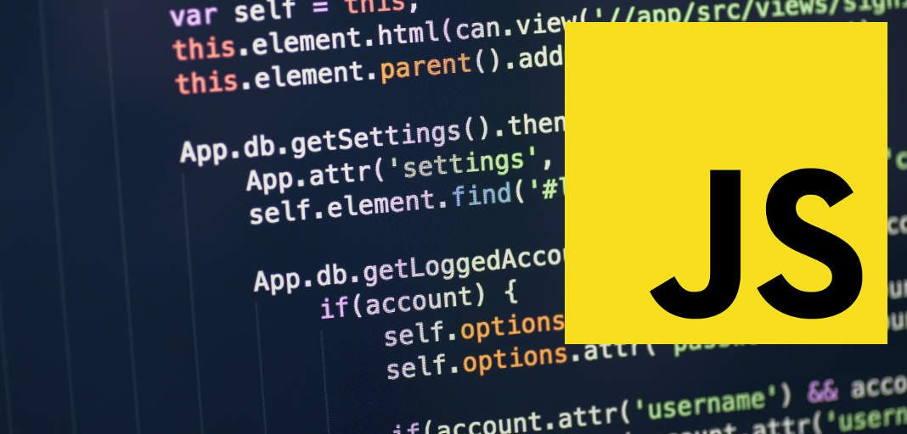

As 5 linguagens de programação que mais crescem no mercado de TI
Linguagens de programação são conhecimentos escritos e formais que seguem um conjunto de instruções e
regras para o desenvolvimento de softwares.Esses programas podem ser utilizados para serem executados em
um computador (desktop), dispositivo mobile, equipamento que utiliza IoT ou qualquer outro que
possibilite sua execução.
Na prática, programar é escrever um texto seguindo as características de determinada linguagem de
programação, o código propriamente dito, que será transformado em um software.
Muitas linguagens de programação utilizam palavras e expressões do inglês. Por isso, quem domina esse
idioma consegue identificar e ler o código com mais facilidade.
1°- Javascript

JavaScript é uma linguagem de programação universal, multiplataforma e segue sendo a linguagem mais
popular no mundo inteiro nos últimos sete anos. A universalidade do JavaScript a torna especialmente
procurada para aplicativos de Machine Learning e Inteligência Artificial, Desenvolvimento Mobile e
Desenvolvimento Web . Ela também permite um tempo de
desenvolvimento rápido, fornecendo um loop interativo para facilitar a depuração em uma estrutura de
desenvolvimento sólida.
2°- Java

O Java é a base para praticamente todos os tipos de aplicações em rede e é o padrão global para o
desenvolvimento e distribuição de aplicações móveis e incorporadas, jogos, conteúdo baseado na Web e
softwares corporativos. Com mais de 9 milhões de desenvolvedores em todo o mundo, de forma eficiente, o
Java permite que você desenvolva, implante e use aplicações e serviços estimulantes.
3°- Python

Python é uma linguagem de programação criada por Guido van Rossum em 1991. Os objetivos do projeto da linguagem eram: produtividade e legibilidade. Em outras palavras, Python é uma linguagem que foi criada para produzir código bom e fácil de manter de maneira rápida. Entre as características da linguagem que ressaltam esses objetivos estão:
- Baixo uso de caracteres especiais, o que torna a linguagem muito parecida com pseudo-código executável;
- O uso de identação para marcar blocos;
- Quase nenhum uso de palavras-chave voltadas para a compilação;
- Coletor de lixo para gerenciar automaticamente o uso da memória;
Além disso, Python suporta múltiplos paradigmas de programação. A programação procedimental pode ser usada para programas simples e rápidos, mas estruturas de dados complexas, como tuplas, listas e dicionários, estão disponíveis para facilitar o desenvolvimento de algoritmos complexos.
4°- Go
A GoLang — ou, simplesmente, Go — é uma linguagem de programação de código aberto do Google. Fez sua
primeira versão estável em 2011 e tem conquistado cada vez mais adeptos, já que surgiu com a ideia de
simplificar o processo de desenvolvimento de software.
Ela é uma linguagem de programação criada originalmente em 2007 pelo Google. Inicialmente,
pretendia ser um padrão de codificação interno para a própria infraestrutura da empresa, mas seu
potencial impulsionou a abertura de capital. Em 2009 foi lançada oficialmente e tem crescido desde
então.
5°- C++

A linguagem de programação C é uma verdadeira referência no mercado de TI. Ela é tão influente no ramo
que originou diversas variações, como C++, C# e Objetctive-C. Essas sucessoras utilizam conceitos da
linguagem original, mas contam com novas funcionalidades.
Por ser originada da C, a C++ é utilizada para as mesmas finalidades na Ciência da Computação e na
programação. Também é interessante destacar o uso de C++ em jogos de videogames e aplicações muito
usadas no dia a dia, como o Mozilla Firefox e produtos da Adobe.